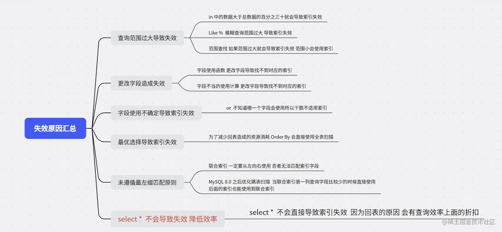
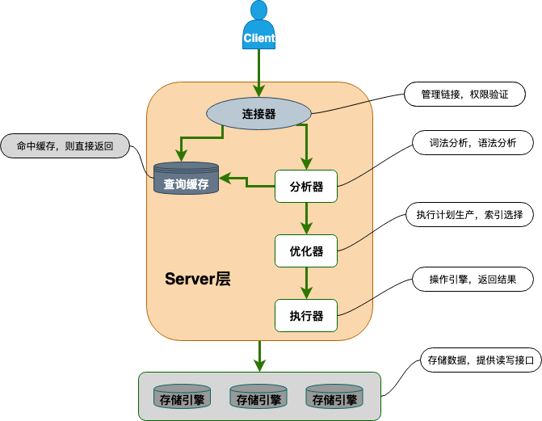

Db
DB engine
innoDB支持行锁、表锁
表锁
对非索引字段加锁，对当前操作的整张表加锁
加锁快，不会发生死锁，但是锁冲突概率高
行锁
针对索引字段加锁
颗粒度更小，可以对一行或者多行记录上锁
三种行锁方式
- 记录锁：单个行记录的锁
- 间隙锁：一个范围的锁，不包含记录本身
- 临键锁： 锁定一个范围，包含记录本身，解决幻读的问题（新增插入）
innodb默认使用next-key lock，如果索引是唯一索引或者是主键，会降级成record lock
并发DB带来的问题
脏读
事务修改对其他事务是可见的，即使没提交
如果这个事务回滚的话，其他的事务读到的就是脏数据
丢失修改
两个事务读取同一数据，分别进行修改，导致最后一个生效
不可重复读
一个事务内第二次读取之前，被其他事务修改，导致两次读取不一致
幻读
记录新增，类似不可重复读
解决：
- 调整隔离级别为串行
- 可重复读下，加上表锁
- 可重复读下，加上Next-key level（表锁+间隙锁）
Mysql的并发事务控制方式
读写锁
读锁（共享锁，S）可以并行，写锁是排他锁)
MVCC
事务隔离级别
READ_UNCOMMITED（读取未提交）
允许读取没提交的，可能导致脏读、幻读、不可重复读
READ_COMMITTED（读取已提交）
只允许读取已经提交的，解决脏读
REPEATABLE_READ（重复读）（innodb默认）
对同一字段的多次读取结果一致，除非自己修改了， 解决脏读、不可重复读
SERIALIZABLE（可串行化）
一条一条执行，影响效率
SQL性能优化
- 慢sql定位和分析
- explain命令：分析查询计划、索引使用情况、全表扫描等
- 监控工具：慢查询日志、performance schema
- 索引、表结构和sql优化
- 创建索引、覆盖索引、最左前缀匹配原则
- 表结构设计
- 使用具体字段、连接查询代替子查询、合理使用分页查询、批量操作等
- 架构优化
- 读写分离：读和写分离到不同的数据库实例，提升并发能力
- 分库分表：降低单表的数据量，减少压力，但是复杂性会升高
- 冷热分离：根据访问频率和重要性，冷数据放在低成本的机器上，热数据放在高性能上
- 缓存机制：性价比最高，使用redis等缓存中间件，将热点数据缓存到内存中，减轻数据库压力
- 其他优化
- 连接池配置：连接池大小、超时时间
- 硬件升级：增加内存
index索引
最左前缀匹配原则
如果sql语句用到了联合索引的最左边的索引，就可以使用这个联合索引去进行匹配
最左边的连续的索引，都能匹配上，优化器会自动调整位置；如果是范围查询（>、<、between、like），就不连续，停止匹配
例子：联合索引是（sname, s_code, address）
成功例子
where sname="变成派大星"
where address="上海" and sname="变成派大星"
失败例子
where address = "上海" and s_code = 1; 相当于* 1 1，第一个字段匹配到所有的值
where sname = "变成派大星" and s_code > 1 and address = "上海" （这个查询type是range不是ref（非唯一性索引扫描））
跳越扫描
如果第一个索引唯一值比较少，第二个索引也可以使用联合索引
索引的底层原理
B+树，由于构建B+树只能根据一个值来确定索引关系，所以用最左的字段
先排序最左字段、在排序剩下的字段
所以不建议建立在经常变动的字段上，否则索引结构也要跟着改变
不推荐使用select *
- 无用字段增加网络消耗
- 多了一次B+树查询，速度慢很多。通过主键索引过滤数据，再通过主键ID去全表获取所有的列，术语是回表
索引失效情形
Like%
如果范围比较小，xxx%(0或者多个字符) 、xxx_（1个字符）的话，可能会走索引
Or
需要全部加上索引
in、not in
在结果集大于30%失效
orderby
全表扫描， 而不使用索引

回表问题
回表查询在非主键索引上，导致两次树查询的问题
B&B+（多路平衡查找树）
异同
- B tree所有的节点存放key和data，B+只有叶子节点存放key和data，其他节点只存放key
- B所有的叶子节点独立，B+叶子节点有引用链指向相邻的叶子节点
- 范围查找时候，中序遍历，从下限到上限，B+直接遍历链表
聚集索引和非聚集索引
非聚集索引：索引和数据是分离的，data存放的是数据的地址（主键），如果key存在，取出data中的地址，读取相应的数据，例如：辅助索引和mysql引擎MyISAM的主键和非主键索引
聚集索引：数据文件本身就是一个索引，key是数据的主键，data保存了完整的数据，例如：InnoDB 中的主键索引
优缺点：
聚集索引：
- 查询速度快，少了一次读取的IO操作，data就是数据
- 排序查找和范围查找快
覆盖索引
本来需要根据索引去找到对应的数据，但是如果查询的字段正好是索引的字段，就不需要回表查询
联合索引
多个字段创建索引
索引下推

ICP，指的是server层本来把查询引擎层根据第一个判断条件下的结果在进行过滤，其实可以下放给查询引擎层，直接过滤在返回，减少了沟通的次数
存储引擎在索引遍历的过程中，执行部分where语句，过滤掉不满足的条件，减少回表次数
哪些字段创建索引
- 频繁查询的
- 频繁作为条件查询的
- 频繁排序的
- 频繁用于连接的
- 不为null
- 不频繁修改的
尽量用联合索引代替单列索引
节省存储空间和提高修改效率，减少冗余索引